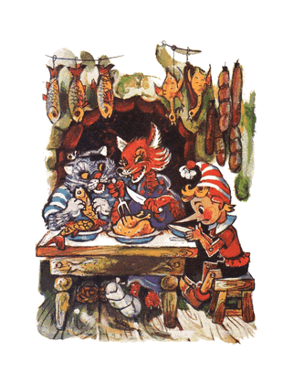
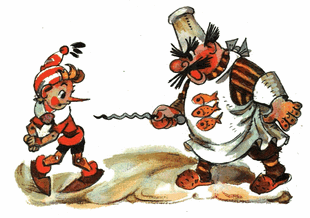

Buratino, si rubah Alisa dan si kucing Basilio menghilir turun gunung, berjalan dan terus berjalan; melintasi lapangan, perkebunan anggur, melintasi hutan pinus, lepas ke arah laut, balik lagi dari arah laut, melintasi hutan yang sama, perkebunan anggur...
Sampai di atas bukit, sebuah kota dan matahari di atasnya dapat terlihat, dari ujung kiri ke ujung kanan...
Si rubah Alisa berkata, terengah-engah:
- Ah, tidak segampang itu untuk masuk ke Negeri Idiot, semua telapak kaki terkikis habis...
Sore menjelang malam, mereka melihat di pinggir jalan ada sebuah rumah tua dengan atap-atap yang datar-datar dan papan nama di atas pintu masuknya:
KEDAI "TIGA IMPUN"Sang master bergegas keluar menyambut para tamu, melepaskan topi panjang dari kepalanya yang botak lalu membungkuk rendah; mempersilahkan masuk.
- Tidak ada salahnya kalau kita sekadar mencicipi kerak kering, /kata si rubah/
- Sekadar kerak roti untuk traktiran. /tambah si kucing/
Memasuki kedai, duduk di dekat perapian, dimana di pemanggangan dan penggorengan serba-serbi makanan tengah dipersiapkan.
Si rubah Alisa setiap menit menjilat bibir, si kucing Basilio meletakkan dua cakarnya di atas meja, moncong berkumisnya bertopang di atas cakar; menatap ke arah makanan.
- Hei, master, /kata Buratino, dengan nada yang tinggi/ beri kami tiga kerak roti...
Sang master nyaris terjungkal karena kaget, sebab tamu yang terhormat memesan sangat sedikit.
- Buratino yang cerdas tapi humor ini bercanda dengan anda, master. /si rubah terkikik/
- Dia bercanda, /geram si kucing/
- Maksud dia beri kami tiga kerak roti, disertai.. kambing guling yang montok itu.. /kata si rubah/ ditambah anak angsa, dan sepasang merpati, dipanggang, dan barangkali, ditambah ati ampela.
- Enam ekor ikan kerapu goreng yang paling gemuk, /pesan si kucing/ dan ikan mentah kecil untuk camilan
Singkat cerita, mereka mengambil semua makanan yang ada di perapian: untuk Buratino hanya tersisa sepotong kerak roti.
Si rubah Alisa dan si kucing Basillio melahap semua makanan beserta tulang-tulangnya.
Perut mereka bengkak, moncong belepotan.
- Kita istirahat satu jam, /kata si rubah/ tepat tengah malam kita pergi. Jangan lupa bangunkan kami, master...
Si rubah dan si kucing jatuh di atas dua kasur empuk, mendengkur dan bersiul. Buratino meringkuk di pojokan di atas karpet anjing.
Memimpikan sebuah pohon berdaun emas bundar-bundar... Kedua tangannya menggapai-gapai...
- Hei, signor Buratino, sudah waktunya, sudah tengah malam...
Pintu diketuk. Buratino terperanjat, ngucek-ngucek mata. Di atas kasurnya si rubah maupun si kucing, sudah kosong.
Sang master menjelaskan:
- Teman-teman anda yang terhormat berkenan untuk bangun lebih awal, sarapan kue pai dingin lalu pergi...
- Tidak ada pesan untukku?
- Justru mereka mewanti-wanti, yaitu, signor Buratino, jangan telat satu menit pun, bergegas menyusuri sepanjang jalan melewati hutan...
Buratino pun bergegas ke arah pintu, tapi sang master mencegatnya di ambang pintu, memicingkan mata, tangan bertolak pinggang:
- Terus untuk makan malamnya siapa yang bayar?
- Oy, /pekik Buratino/ berapa?
- Tepat satu keping emas...
Buratino berniat untuk menerobos melewati dua kakinya, tapi sang master meraih tusukan daging. Kumis baplangnya, bahkan rambut di telinganya, berdiri tegak.
- Bayar, berengsek, atau kukoyak-koyak kau seperti kumbang!
Terpaksa harus membayarkan satu dari lima keping emas-nya. Dengan hidung terhisak-hisak lara, Buratino meninggalkan kedai terkutuk itu.
Malam begitu gelap, bisa dibilang pekat, seperti jelaga. Semua sudah tertidur pulas. Hanya ada seekor burung malam terbang diam-diam di atas kepala Buratino; "Celepuk Gunung".
Menempelkan sayap lembut-nya di hidung, Celepuk mengulang-ulang:
- Jangan percaya, jangan percaya, jangan percaya
Dia terhenti dengan kesal.
- Apa maumu?
- Jangan percaya pada si kucing dan si rubah...
- Dan juga padamu..!
Dia terus berlalu semakin jauh dan terdengar, tampaknya Celepuk memekik dari belakang:
- Takut loh ada perampok di jalan ini...